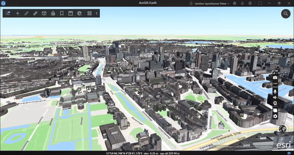
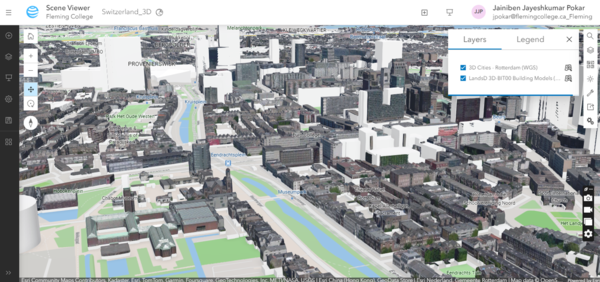
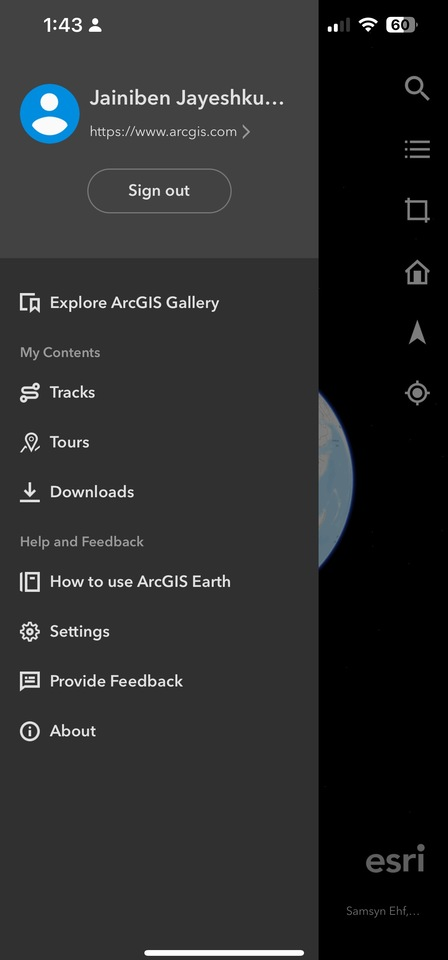
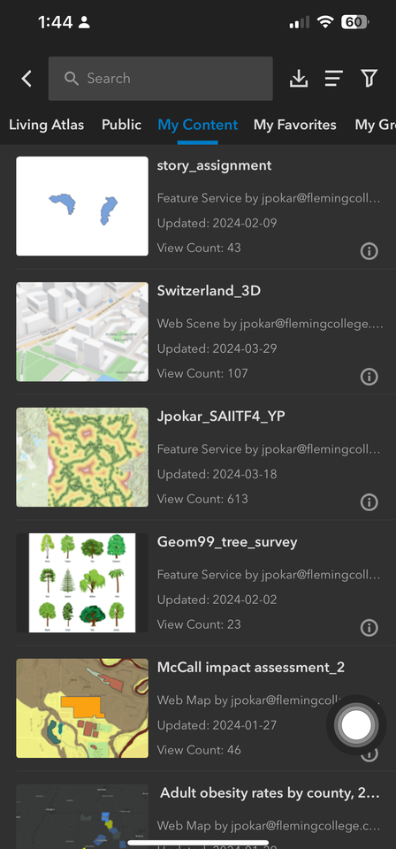
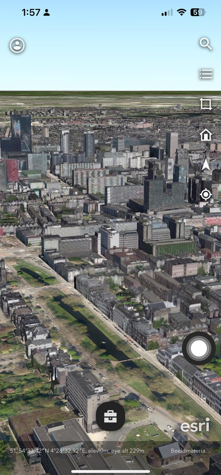
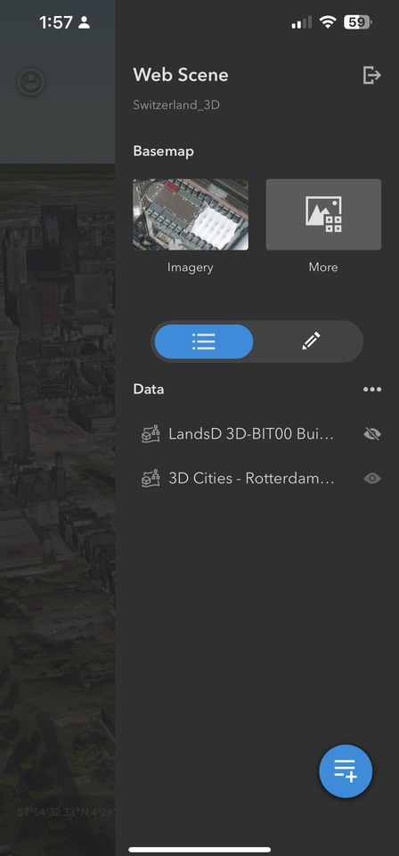
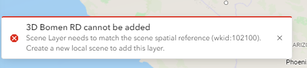
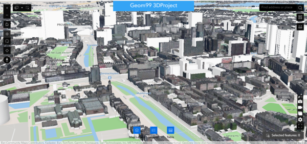
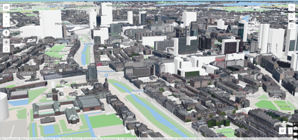
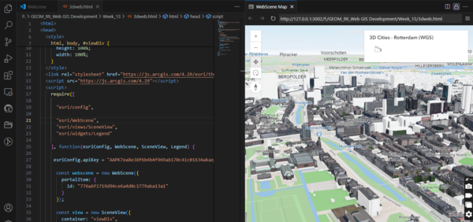

ArcGIS Earth
ArcGIS Earth is a 3D globe software from Esri, the same company behind ArcGIS, which is widely used for geographic information system (GIS) mapping and spatial analysis. ArcGIS Earth provides a dynamic 3D experience to visualize and analyze spatial data on a global scale. It allows users to navigate, explore, and analyze 3D data, including terrain, imagery, and layers from various sources. ArcGIS Earth is often used for tasks such as visualizing geospatial data, conducting spatial analysis, and collaborating on projects that require a global perspective.
| Advantages |
Disadvantage |
| Easy to use |
Big Data Issues |
| Effective 3D Visualization |
Expensive Licensing |
| Supports Laptop And Mobile Views |
Does not support landscape mode on mobile phone |
| Multilingual |
Too complex |
| Supports Many Layers |
Feature Limitations |
Process
Please note: these links may be unusable in the future due to licensing expirations.
First, I created the 3D scene in ArcGIS Scene Viewer, because I used data from ArcGIS Living Atlas. I used 3D Cities - Rotterdam (WGS) data.

I published that scene in the my ArcGIS Online account.
Login into the Arcgis Earth mobile application as well as in the desktop application, add that layer. Go to the Explore Arcgis Gallery-> My Content-> select the Scene layer.


I loaded that layer on the screen where we can see the 3D Buildings and optionally add points or lines, or even measure the distance between assets. We can add more than one layer.


ArcGIS Earth Functionality: Add data, Draw, 3D Analysis, Underground, Measure, Tour

What didn't work
- I tried adding 2D data to the scene, but it didn't show any error related to spatial reference. However, when I tried adding a different 3D data in the same scene, it showed a spatial projection error.

- Although ArcGIS Earth takes some time to load data in its laptop version, it works smoothly on mobile devices.
- When I tried using the ArcGIS SDK, I faced an issue. I tried to access my ArcGIS Scene link, but it did not work because it was not published at a public level.
- Some computers do not support ArcGIS Scene Viewer because they lack a graphics card that can handle 3D data graphics. This makes it impossible to visualize the data on these systems. I once tried accessing ArcGIS Scene Viewer on my housemate's computer when my laptop battery was not working, but it didn't work either as her computer also didn't support it.
- Overall, I found ArcGIS Earth to be the best solution overall because it supports all 3D and 2D data. It even allows us to see underground data and perform modifications such as 3D analysis, drawing, pop-ups, and measurements. Additionally, it runs smoothly on mobile devices.
|
- ArcGIS Experience Builder



